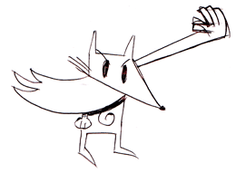

The Original Fifty #

Over the last two months, I have met a small group of friends online who helped me out with a new program. The fifty people in that group have made my life soooo wonderful!!
Brian DeLacey, who started teaching 3 of his kids to program and kept detailed notes on their good and bad times.
Leslie Wu, who has been all over FFSandbox and Hpricot. I am amazed by how she can look in any direction and then do exactly what she wants in that direction. I repeat: she’s been hacking the sandbox for me!!
RSL, who’s been a regular around here, was one of the 50 and I really like his Hacky Mouse kaleidoscope.
Harold Hausman, who started LittleCoder and hung out in the group to offer encouragement and ideas—we’re going to team up soon, Harold!
And I still gotta dig up some links for the rest of these folks. (Eli?)
Danno
Can I give you a hug?
Cuz this project is pure love.
why
Sure. In addition, let’s be friends forever.
eli
I’d like to step onto the soupcrate for a moment to say that nothing could have energized me in the Ruby world more than working with Hackety Hack in a clandestine group did.
I have been working with .NET professionally for 4.5 years, and the recent experience with HH and the other Great Thinkers on the hackety list has me looking once again at the distant horizon, wondering if there is a more beautiful place to be. It might not be Ruby, per se, but HH was definitely a freeing experience.
I’m not sure what the future holds, but I’m awful glad I was where I was. Thanks, _why. Double thanks to Brian who made me go to Wikipedia almost every time he wrote the list.
I’m sad it’s over, but now HH must be tried on bigger masses. I’ll be here when the next secret project comes along.
And here is a link.
RSL
Aw, shuck-a-luck! I thank you for the chance to be a part of such a fun and really meaningful project as this one. You’re an amazing and completely inspiring presence.
And that Hacky Mouse image? Ruby. Part of an RMagick extension I’ve been working on. Ruby-Ruby-do.
dodecaphonic
I’m still joyful from discovering Hackety Hack. I actually babbled a lot about it to my wife last night, who patiently listened and nodded. I went through the lessons eagerly, and wished I had a kid to show it to.
Congratulations to you and the super secret team. HH makes me happy.
jayunit
so I’m probably a relative youngster, but gosh if this doesn’t remind me of the brightly colored, large paged paperbacks from which I gleaned the secrets of CBM -BASIC in the mid-80s before I memorized multiplication tables.
I’ve been wondering for a while what it would be that gets young folks these days as excited about computing as chunky 8-bit sprites flicking around in 64K of RAM did for me, and I think this might be the ticket.
Can’t say this enough: tee aitch ex.
nOlinux
nOcookie
LninYo
You’re a shining star!
Anonymous Coward
_why is so cool!
I swear, Hackety Hack sound like a cool project. But I am a linux user, so I won’t get to try it for a while.
Seriously, this is a great idea! I hope it will bring a new generation of computer hackers into this world.
As a teenage computer programmer myself, I struggle to get interested in programming. I eventally do but it took several programming languages until Ruby.
If I tried Hacketry Hack a long time ago in an alternative timeline, I probably could have got hooked right away.
vais
Very interesting from the packaging/deployment prospective: custom mozilla and ruby in one! What suckety-sucks is that I cannot close the main program window on Windows. Consider this the first bug report. Or maybe I don’t get it and it is supposed to run forever, and you are not supposed to be able to close it :)